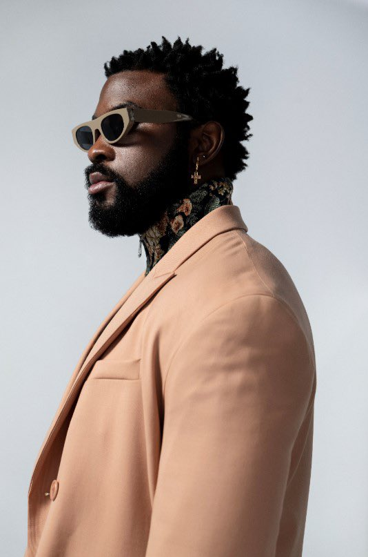

The rapper Damso finally came back from the dead!
After releasing his latest album called « QALF » about one year ago, the Belgian rapper Damso came back with three brand new features in less than a month. The comeback of the artist was very unsure, knowing the fact that he said that he might stop his musical career. The fans are already happy with the news of new songs but it could look like these songs were created only for financial purposes. So, are these songs future « bangers » or is it only about money? Let’s find out! The first song is « Dégaine » featuring Aya Nakamura. Aya is without a doubt one of the most famous french singers in the world, with several hundred million listens on Spotify and being popular even in the USA. We were very surprised and hyped by this feature but the result is really disappointing. The dark lyrics of Damso don’t match at all with Nakamura’s groovy style and the song feel like it was only commercial. The second song is « Wanted you to know » featuring Selah Sue. Selah is maybe less known than Aya Nakamura but the song is already way better. The beat works very well with both artists but it feels like it’s way more Selah’s song than Damso’s. Indeed, Damso only does one verse and didn’t even appears on the chorus so his fans might be disappointed. The third song is « RENCONTRE » featuring Disiz. Finally. The redemption. This song is clearly very well produced. Even if Disiz feels a bit off in the beginning, the song gets better and better. We can feel a lot of Damso’s influence by changing the beat several times in the song ,like he did for one of his most famous songs, « Mosaïque Solitaire ». Even if we could think that he copies his past song a bit, this feature is just an absolute « banger ». In conclusion, everybody will probably not agree but our opinion is that these features show us than Damso still remains creative. He tries new things and even if it’s not always good, sometimes he produces some extraordinary songs like « RENCONTRE » so the only thing we can do is recommending you to listen to his songs.
After releasing his latest album called « QALF » about one year ago, the Belgian rapper Damso came back with three brand new features in less than a month. The comeback of the artist was very unsure, knowing the fact that he said that he might stop his musical career. The fans are already happy with the news of new songs but it could look like these songs were created only for financial purposes. So, are these songs future « bangers » or is it only about money? Let’s find out! The first song is « Dégaine » featuring Aya Nakamura. Aya is without a doubt one of the most famous french singers in the world, with several hundred million listens on Spotify and being popular even in the USA. We were very surprised and hyped by this feature but the result is really disappointing. The dark lyrics of Damso don’t match at all with Nakamura’s groovy style and the song feel like it was only commercial. The second song is « Wanted you to know » featuring Selah Sue. Selah is maybe less known than Aya Nakamura but the song is already way better. The beat works very well with both artists but it feels like it’s way more Selah’s song than Damso’s. Indeed, Damso only does one verse and didn’t even appears on the chorus so his fans might be disappointed. The third song is « RENCONTRE » featuring Disiz. Finally. The redemption. This song is clearly very well produced. Even if Disiz feels a bit off in the beginning, the song gets better and better. We can feel a lot of Damso’s influence by changing the beat several times in the song ,like he did for one of his most famous songs, « Mosaïque Solitaire ». Even if we could think that he copies his past song a bit, this feature is just an absolute « banger ». In conclusion, everybody will probably not agree but our opinion is that these features show us than Damso still remains creative. He tries new things and even if it’s not always good, sometimes he produces some extraordinary songs like « RENCONTRE » so the only thing we can do is recommending you to listen to his songs.
